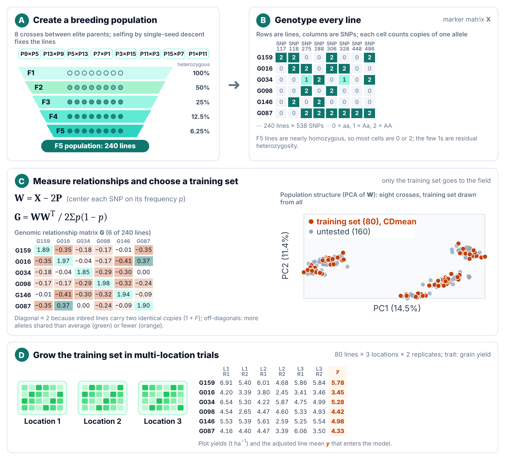
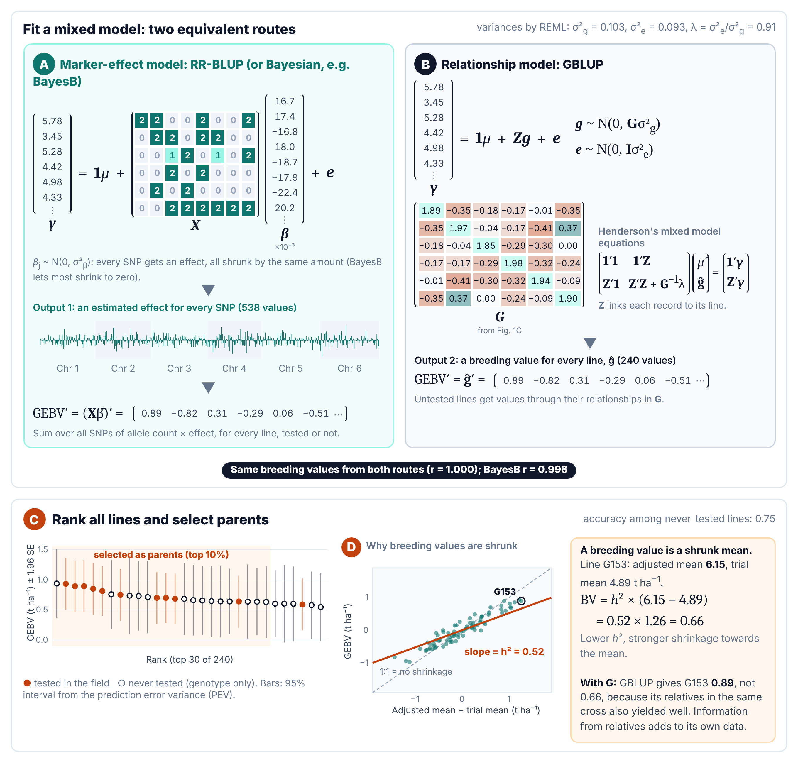
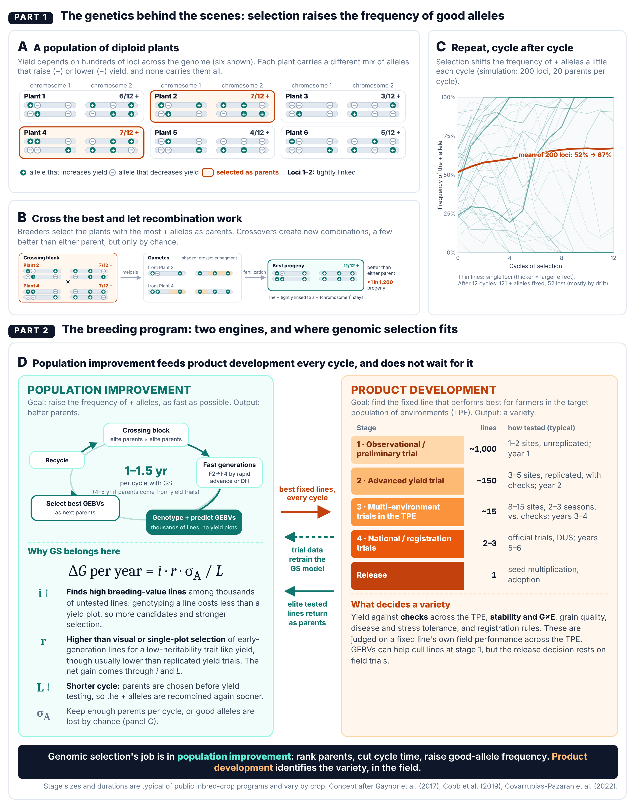

Research · Code & data
Genomic selection does not make varieties.
It was never meant to. Its job is to discard poor lines early, using prediction from a mixed model that borrows information from relatives, and to recycle better parents faster. This repository holds every simulation, dataset and figure behind the argument.
Every number comes from the code.
Figures 1–3 are composed as HTML and SVG from the simulated data; Figure 4 is drawn in ggplot2. Click a figure for the full-resolution PDF.

Figure 1 · Box 1From a breeding population to field data
Crosses, single-seed descent, the marker matrix, the genomic relationship matrix and the training set.
PDFPNG
Figure 2 · Box 1What genomic prediction returns
Two equivalent model routes, ranked breeding values with their errors, and why breeding values are shrunk.
PDFPNG
Figure 3 · Box 2Why population improvement
The genetics behind selection, and population improvement as the supply chain for product development.
PDFPNG Figure 4
Figure 4What genomic selection delivers
A filter, not a selector, and faster gain from early recycling.
PDFPNGPlain R you can read step by step.
Base R for every simulation step, rrBLUP for REML and RR-BLUP, BGLR for BayesB, and Python with Playwright to render Figs 1–3.
| Script | Reproduces | Writes |
|---|---|---|
| code/Fig1_Fig2_simulate_program.R | Box 1, Figs 1–2. One program from crosses to ranked GEBVs: SNPs, G, CDmean, multi-location trial, RR-BLUP, GBLUP, BayesB. | Fig1_data.json, Fig1_*.csv |
| code/Box1_100_replicate_programmes.R | Statistics in the text. Shrinkage, reliability and realized accuracy across and within families in 100 programs. | Box1_100_replicates*.csv |
| code/Fig3C_allele_frequency_sim.R | Fig. 3C. Favorable-allele frequencies under recurrent selection. | Fig3C_*.csv |
| code/Fig4A_selection_curves.R | Fig. 4A. What selecting on a criterion of accuracy r keeps. | Fig4A_selection_curves.csv |
| code/Fig4B_multicycle_GS_vs_PS.R | Fig. 4B. 20 years of GS with early recycling vs phenotypic selection, 30 replicates. | Fig4B_multicycle_summary.csv |
| code/Fig4_plot.R | Fig. 4. Draws both panels. | figures/JXB_Fig4 |
| figures_src/ | Figs 1–3. HTML/SVG builders and the Playwright renderer. | figures/JXB_Fig1–3 |
Run the simulations in R
# install.packages(c("rrBLUP","BGLR","jsonlite","ggplot2","patchwork"))
setwd("code")
source("Fig1_Fig2_simulate_program.R")
source("Box1_100_replicate_programmes.R")
source("Fig3C_allele_frequency_sim.R")
source("Fig4A_selection_curves.R")
source("Fig4B_multicycle_GS_vs_PS.R")
source("Fig4_plot.R")Render Figs 1–3
# Python 3 + Playwright (Chromium) cd figures_src python3 build_fig1.py python3 build_fig2.py python3 render.py "$PWD/Fig1_composite.html" \ "$PWD/../figures/JXB_Fig1" # likewise for Fig2_ and Fig3_composite.html
R 4.3.3 · rrBLUP 4.6.3 · BGLR 1.1.4 · ggplot2 4.0.3 · code under the MIT License